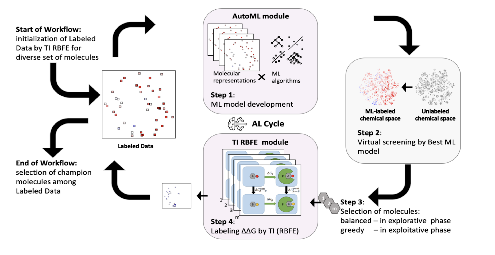

Research
In Silico Drug Discovery
We have developed several high-throughput binding free energy simulation workflows for drug discovery. We utilize high-throughput absolute binding free energy simulation for hit discovery and relative binding free energy simulations combined with our active learning workflow for lead optimization. Combined, we utilized these workflows to win 1st place in the CACHE Challenge #1, an international computational drug discovery competition, where we and our collaborators discovered 14 novel inhibitors to the challenging leucine-rich repeat kinase 2 (LRRK2) WDR domain, an understudied Parkinson's disease drug target with no known molecular inhibitors prior to our work.
- Active Learning Guided Drug Design Lead Optimization Based on Relative Binding Free Energy Modeling., Gusev F, Gutkin E, Kurnikova MG, Isayev O., J. Chem. Inf. Model. 63(2) pp 583–594, (2023)
- In silico screening of LRRK2 WDR domain inhibitors using deep docking and free energy simulations, Gutkin, E; Gusev, F; Gentile, F; Ban, F; Koby, SB; Narangoda, C; Isayev, O; Cherkasov, A; Kurnikova, M.G., DOI: 10.1039/D3SC06880C, Chem. Sci., Advance Article (2024)